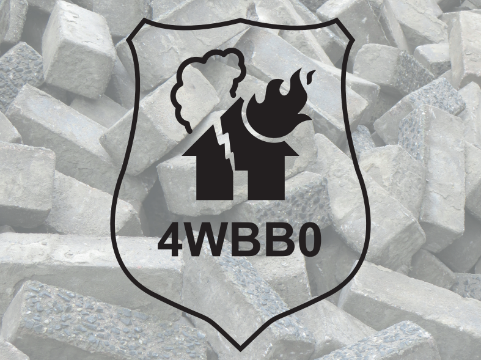

This is me | "Your name"
Hey there!
Welcome to "This is me". Here you can find everything there is to know about me. This website is used as my personal portfolio and contains information about myself, projects that I have worked on and other miscellaneous things.
About me | "Your name"
"Your name"
I'm "Your name", a 20 year old student at the TU/e. I'm born and raised in the Netherlands, have a younger brother and a younger sister. At home we also have a cat, a dog and some goldfish in the pond in the garden.
I've lived in 's-Hertogenbosch until I was 7 years old. I then moved to Veldhoven, which is not to far from Eindhoven where I currently study.
My studies | "Your name"
Studies
I went to two different primary schools. I started at a school in 's-Hertogenbosch, but when I moved I ofcourse also had to switch schools. That is when my education at the
From there I went on to high school. After a difficult time of chosing where to go to, I ended up deciding to go to the
After having completed my six years of TTO - VWO, I moved to the university of Eindhoven. This university always had taken my intereset and was my first choice when deciding upon further education.
My projects | "Your name"
Projects
Here are some of the projects I have been working on during the course of my study at the university of Eindhoven.
First up is a website, created by me and five other students that is meant to be used as a sort of guide for new students comming to the TU/e. It contains information about the university itself, Eindhoven and extra's like how to cook. It can all be found here:The website
Together with another group of students we made a model which purpose was to calculate the overal costs and quantity needed to service X amount of invalid passengers at Schiphol Airport.
Another project that I completed recently was the creation of a remote controlled robot that is to be used in a disaster area for the search and rescue of casualties.
- 